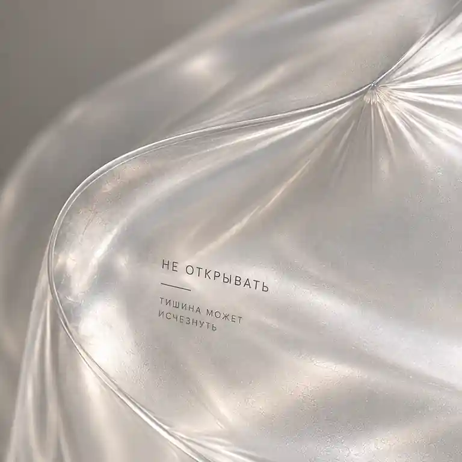
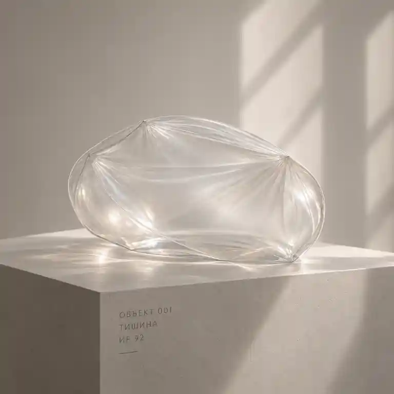
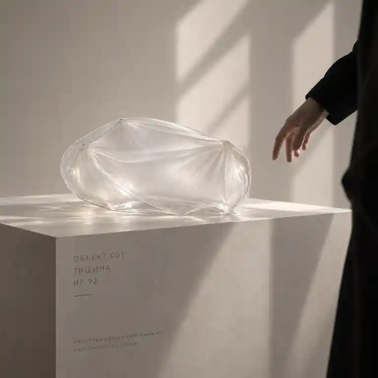

The Last Catalog · Independent digital project
Silence.
A form for the invisible.
A visual series about a state without notifications and background noise. Four individual images of one conceptual object.

- Brief
- Make an intangible state visible.
- Context
- An independent concept, rather than a manufactured product or commercial photoshoot.
- Medium
- Art direction and AI-assisted visualization.
A membrane holding emptiness
Silence has no form of its own. A fine, almost colorless membrane makes the space holding it visible. Soft side light and a stone pedestal connect the image to the language of a product catalog.
The original project defines the visual principle: a light membrane, rather than a glass sculpture.

One series.
Different roles for each view.


The author’s place
Another image from The Last Catalog places a woman on a stone cube before a mirror. The figure, reflection, and material presence of the pedestal shift attention from the object to human presence.
On the studio cover, this image sits alongside Silence. It is an artwork, rather than a claim about the identity of the person shown or a real portrait of the author.

A consistent visual sequence
The main image, material detail, catalog view, and sense of scale serve different roles while retaining consistent light and character.
Contact
Let’s discuss your project.
Tell us about your product, timeline, and the result you need. We will start with the brief and agree on the right scope.